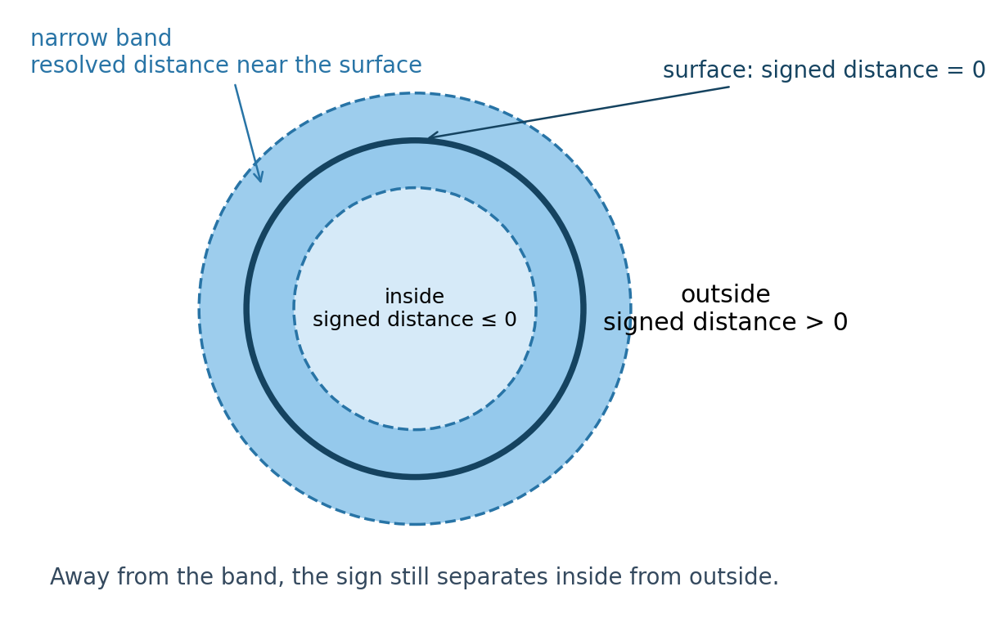
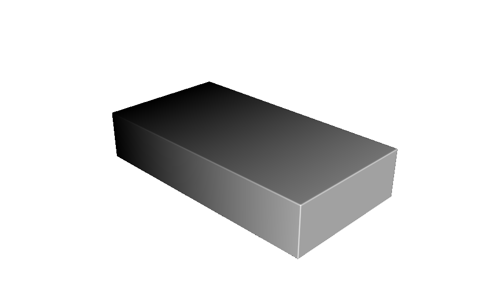
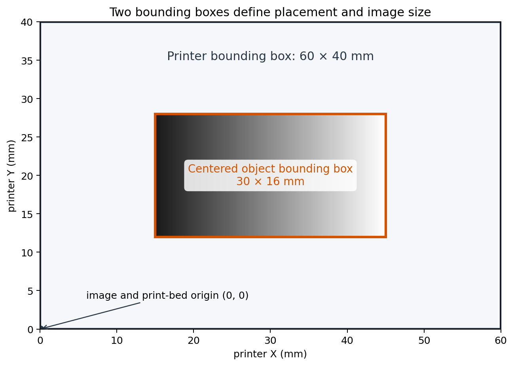
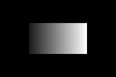

Creating a Compiler in Python#
An OpenVCAD compiler translates a reusable design tree into the lower-level representation understood by a machine. The design describes geometry and spatial attributes; the compiler decides where to sample them, validates the result, and writes the machine-facing files.
This guide builds a small compiler entirely in Python for a hypothetical vat photopolymerization printer. The printer accepts a stack of full-bed, 8-bit grayscale PNG images:
black (
0) means no exposure;white (
255) means maximum exposure; andintermediate values request an intermediate exposure time or light intensity.
Some grayscale-capable vat systems use exposure dose to change cure state and,
in turn, mechanical response. That is the motivation for this example. The
built-in VAT Photo Compiler solves a similar problem
with OpenVCAD’s standard INTENSITY attribute and BMP output. Here, we will
write a simpler PNG compiler ourselves and deliberately use a custom scalar
attribute named exposure.
Prerequisites and project files#
This is an advanced guide, but it assumes only the Python concepts introduced in Getting Started with OpenVCAD and the Functional Grading Guide. All dimensions in this guide are in millimetres.
The complete project is in
examples/compilers/custom_python_vat/
custom_python_vat/
├── .gitignore
├── README.md
├── design.py
├── grayscale_vat_compiler.py
├── compile_design.py
└── preview_design.py
The separation is intentional. grayscale_vat_compiler.py is reusable and
accepts any compatible OpenVCAD root object. design.py is only one test
design, while compile_design.py supplies the settings for one printer.
A practical compiler contract#
You do not need a custom compiler for every design, and a small Python compiler does not need a complicated framework. A useful compiler should:
accept any OpenVCAD root object that carries the field it consumes;
name and validate its required attribute;
define the machine’s sampling domain and resolution;
check that the object fits within the machine;
sample geometry and attributes in bulk;
define behavior for missing or invalid values;
convert valid samples into the machine’s representation; and
report actionable errors and progress.
The lowest-level attribute should be as close as practical to something the
machine understands. Our printer understands grayscale exposure, so
exposure is a better compiler input than a high-level property such as
modulus. A different workflow could convert modulus into exposure before this
compiler runs via
Attribute Translation in the Attribute Modifier and Resolver Guide.
Prepare before querying a tree#
OpenVCAD design roots provide three central query methods:
bounding_box()returns the minimum and maximum authored coordinates;evaluate(x, y, z)queries geometry; andsample(x, y, z)queries geometry and attributes together.
Call prepare(voxel_size, bandwidth) on a root before calling evaluate() or
sample().
voxel_size = pv.Vec3(0.254, 0.254, 1.0)
bandwidth = 6.0
root.prepare(voxel_size, bandwidth)
voxel_size tells the tree the intended sampling pitch in X, Y, and Z.
bandwidth is a physical distance around the zero level set—the surface where
the signed distance equals zero. Some nodes use these values to load data,
construct an internal distance field, or initialize state needed for later
queries.
Within the narrow band, the signed-distance magnitude describes distance
to the surface. Away from it, many workflows need only the sign: negative or
zero is inside and positive is outside. Depending on the node, a query far
outside its prepared domain may instead return None. Analytic primitives may
provide an exact distance over a wider region, but a compiler should not
depend on far-field distance magnitude when an inside/outside test is enough.
Signed distance and the narrow band

evaluate(): geometry only#
evaluate() returns a signed-distance value or None:
signed_distance = root.evaluate(0.0, 0.0, 0.0)
if signed_distance is None:
print("Outside the prepared query domain")
elif signed_distance <= 0.0:
print("Inside or on the object")
else:
print("Outside the object")
This is enough for a compiler that cares only about occupancy or surface geometry.
sample(): geometry and attributes#
sample() accepts the same X, Y, and Z coordinates but returns two values:
signed_distance, attributes = root.sample(0.0, 0.0, 0.0)
if signed_distance is not None and signed_distance <= 0.0:
if attributes is not None and attributes.has_sample("exposure"):
exposure = attributes.get_sample("exposure")
print("Exposure:", exposure)
The first value follows evaluate(). The second is an AttributeSamples
container holding whatever named fields are defined at that location. Use
has_sample(name) before get_sample(name).
To check which names occur anywhere in a design tree:
print(root.attribute_list())
if "exposure" not in root.attribute_list():
raise RuntimeError("The design does not contain an 'exposure' attribute.")
This is a useful preflight check, but it is not proof that the attribute exists at every interior point. We will handle that distinction explicitly.
Build a design with a custom attribute#
Attribute names do not need to come from pv.DefaultAttributes. This example
uses the ordinary Python string "exposure" and a floating-point field from
0.1 to 1.0 along the 30 mm X length:
import pyvcad as pv
EXPOSURE = "exposure"
length_mm = 30.0
width_mm = 16.0
height_mm = 6.0
prism = pv.RectPrism(
pv.Vec3(0, 0, 0),
pv.Vec3(length_mm, width_mm, height_mm),
)
# x spans -15 to +15 mm:
# 0.03(-15) + 0.55 = 0.1
# 0.03(+15) + 0.55 = 1.0
exposure_gradient = pv.FloatAttribute("0.03 * x + 0.55")
prism.set_attribute(EXPOSURE, exposure_gradient)
root = prism
This definition is also available in design.py. The compiler does not know
that it is receiving a rectangular prism; it only knows that root is an
OpenVCAD object with geometry and, somewhere in its tree, an exposure
attribute.
The render below visualizes that custom attribute with a black-to-white
palette. Dark values are near exposure 0.1, and white reaches exposure
1.0.
Demo object with its exposure gradient

Scale up with TreeSampler#
Calling evaluate() or sample() in a Python loop works for a few inspection
points, but printer grids can contain billions of samples. Repeated
single-point calls add unnecessary Python overhead.
pyvcad.TreeSampler provides ordered, parallel bulk queries:
points = [
pv.Vec3(-10, 0, 0),
pv.Vec3(0, 0, 0),
pv.Vec3(10, 0, 0),
]
sampler = pv.TreeSampler(root, voxel_size)
distances = sampler.evaluate_points(points)
samples = sampler.sample_points(points)
evaluate_points(points)performs the equivalent ofevaluate()for every point.sample_points(points)performs the equivalent ofsample()for every point.Both methods preserve the input order, run the work in parallel, and accept an optional progress callback receiving integers from
0through100.
Constructing TreeSampler prepares the root automatically using the supplied
voxel size and a bandwidth six times the largest voxel dimension. The earlier
explicit prepare() example remains important whenever you query a root
directly.
The grid-oriented TreeSampler methods sample the object’s bounding-box
domain with sampler padding. Our machine instead needs a full-printer image,
so the compiler builds one layer of printer-space XYZ points and passes those
points to sample_points().
Define the printer and the two bounding boxes#
The example machine is described by:
printer_size_mm = pv.Vec3(60.0, 40.0, 20.0)
dpi = 100.0
layer_height_mm = 1.0
There are two bounding boxes:
The printer bounding box runs from
(0, 0, 0)to(60, 40, 20)mm.The object bounding box comes from
root.bounding_box().
The object must not exceed the printer in X, Y, or Z. The compiler centers its bounding box in the printer’s XY image and places its lowest Z coordinate on the build plane. It preserves the design’s orientation and does not modify the caller’s tree.
The lower-left corner of every displayed PNG is the lower-left corner of the print bed. The physical pixel pitch is:
At 100 DPI, \(p_{xy}=0.254\) mm. The 60 × 40 mm bed becomes a 236 × 157 pixel image after rounding to whole pixels.
Printer and object bounding boxes

Implement the reusable compiler#
The class constructor stores the design and machine settings. It computes the pixel pitch and full-bed image dimensions, but it does not assume a particular geometry:
class GrayscaleVatCompiler:
exposure_attribute = "exposure"
def __init__(
self,
root,
printer_size_mm,
dpi,
layer_height_mm,
output_directory,
):
self.root = root
self.printer_size_mm = printer_size_mm
self.dpi = float(dpi)
self.layer_height_mm = float(layer_height_mm)
self.output_directory = Path(output_directory)
self.pixel_pitch_mm = 25.4 / self.dpi
self.image_width = round(
self.printer_size_mm.x / self.pixel_pitch_mm
)
self.image_height = round(
self.printer_size_mm.y / self.pixel_pitch_mm
)
Validate fit before sampling#
bounding_box() is safe before prepare(), so the compiler can reject an
oversized job early:
object_min, object_max = self.root.bounding_box()
object_size = (
object_max.x - object_min.x,
object_max.y - object_min.y,
object_max.z - object_min.z,
)
printer_size = (
self.printer_size_mm.x,
self.printer_size_mm.y,
self.printer_size_mm.z,
)
for name, object_length, printer_length in zip(
("X", "Y", "Z"), object_size, printer_size
):
if object_length > printer_length:
raise RuntimeError(
"The object is {:.3f} mm in {}, but the printer allows "
"only {:.3f} mm.".format(
object_length, name, printer_length
)
)
Build and sample one layer at a time#
Each point is placed at a pixel center. The mapping below centers the object’s authored XY bounding box over the printer image:
for y_index in range(self.image_height):
bed_y = (y_index + 0.5) * self.pixel_pitch_mm
world_y = object_center_y + bed_y - printer_depth_mm / 2.0
for x_index in range(self.image_width):
bed_x = (x_index + 0.5) * self.pixel_pitch_mm
world_x = object_center_x + bed_x - printer_width_mm / 2.0
points.append(pv.Vec3(world_x, world_y, world_z))
samples = sampler.sample_points(points, progress_callback)
The returned sample at index i belongs to points[i]. Outside geometry is
black. Inside geometry reads exposure, validates it, and maps it to one
grayscale byte:
if signed_distance is None or signed_distance > 0:
grayscale = 0
elif attributes is None or not attributes.has_sample("exposure"):
grayscale = 0
else:
exposure = attributes.get_sample("exposure")
if exposure < 0.0 or exposure > 1.0:
raise RuntimeError("Exposure must be between 0 and 1.")
grayscale = round(exposure * 255.0)
The implementation writes each completed layer immediately. PNG files store
rows from top to bottom, so it vertically flips the NumPy array before saving;
this makes the displayed lower-left pixel correspond to bed (0, 0).
Missing attributes and invalid values#
A root-level check answers “does exposure occur anywhere in this tree?” It
does not answer “is exposure defined at this exact interior point?” A union,
for example, may combine one branch that defines exposure with another that
does not.
The VAT Photo Compiler guide
and the examples under examples/attributes_by_type/undefined/ show the same
issue with built-in compiler attributes.
There are two reasonable policies for a custom compiler:
strict: stop at the first undefined interior sample and ask the designer to repair the field; or
fallback: substitute a documented machine-safe value.
This example uses exposure 0.0 as the fallback, so an undefined location is
not cured. It counts these samples and prints one warning after compilation.
It fails immediately if the root never contains exposure, if the sampled
value is not scalar, or if a value is not finite or falls outside [0, 1].
Complete compiler module#
The full implementation is kept here as a code block and as the reusable
grayscale_vat_compiler.py file. You can also browse the
OpenVCAD-Public examples
for more complete workflows:
1"""A small, reusable grayscale VAT compiler written entirely in Python."""
2
3import math
4from pathlib import Path
5
6import numpy as np
7from PIL import Image
8import pyvcad as pv
9
10
11class GrayscaleVatCompiler:
12 """Compile an OpenVCAD design into full-bed 8-bit grayscale PNG layers."""
13
14 exposure_attribute = "exposure"
15
16 def __init__(
17 self,
18 root,
19 printer_size_mm,
20 dpi,
21 layer_height_mm,
22 output_directory,
23 ):
24 self.root = root
25 self.printer_size_mm = printer_size_mm
26 self.dpi = float(dpi)
27 self.layer_height_mm = float(layer_height_mm)
28 self.output_directory = Path(output_directory)
29 self.undefined_sample_count = 0
30
31 self._validate_settings()
32 self.pixel_pitch_mm = 25.4 / self.dpi
33 self.image_width = max(
34 1, round(self.printer_size_mm.x / self.pixel_pitch_mm)
35 )
36 self.image_height = max(
37 1, round(self.printer_size_mm.y / self.pixel_pitch_mm)
38 )
39
40 def _validate_settings(self):
41 printer_dimensions = (
42 self.printer_size_mm.x,
43 self.printer_size_mm.y,
44 self.printer_size_mm.z,
45 )
46 if any(value <= 0 for value in printer_dimensions):
47 raise ValueError("Printer dimensions must be positive.")
48 if self.dpi <= 0:
49 raise ValueError("Printer DPI must be positive.")
50 if self.layer_height_mm <= 0:
51 raise ValueError("Layer height must be positive.")
52
53 def _prepare_placement(self):
54 object_min, object_max = self.root.bounding_box()
55 object_size = (
56 object_max.x - object_min.x,
57 object_max.y - object_min.y,
58 object_max.z - object_min.z,
59 )
60 printer_size = (
61 self.printer_size_mm.x,
62 self.printer_size_mm.y,
63 self.printer_size_mm.z,
64 )
65
66 dimension_names = ("X", "Y", "Z")
67 for name, object_length, printer_length in zip(
68 dimension_names, object_size, printer_size
69 ):
70 if object_length > printer_length:
71 raise RuntimeError(
72 "The object is {:.3f} mm in {}, but the printer allows "
73 "only {:.3f} mm.".format(object_length, name, printer_length)
74 )
75
76 self.object_min = object_min
77 self.object_max = object_max
78 self.object_size = object_size
79 self.object_center_x = (object_min.x + object_max.x) / 2.0
80 self.object_center_y = (object_min.y + object_max.y) / 2.0
81 self.layer_count = max(1, math.ceil(object_size[2] / self.layer_height_mm))
82
83 def _points_for_layer(self, layer_index):
84 world_z = (
85 self.object_min.z
86 + (layer_index + 0.5) * self.layer_height_mm
87 )
88 points = []
89
90 for y_index in range(self.image_height):
91 bed_y = (y_index + 0.5) * self.pixel_pitch_mm
92 world_y = (
93 self.object_center_y
94 + bed_y
95 - self.printer_size_mm.y / 2.0
96 )
97
98 for x_index in range(self.image_width):
99 bed_x = (x_index + 0.5) * self.pixel_pitch_mm
100 world_x = (
101 self.object_center_x
102 + bed_x
103 - self.printer_size_mm.x / 2.0
104 )
105 points.append(pv.Vec3(world_x, world_y, world_z))
106
107 return points
108
109 def _grayscale_layer(self, points, samples):
110 layer = np.zeros(
111 (self.image_height, self.image_width),
112 dtype=np.uint8,
113 )
114
115 for index, (signed_distance, attributes) in enumerate(samples):
116 if signed_distance is None or signed_distance > 0:
117 continue
118
119 if (
120 attributes is None
121 or not attributes.has_sample(self.exposure_attribute)
122 ):
123 self.undefined_sample_count += 1
124 continue
125
126 exposure = attributes.get_sample(self.exposure_attribute)
127 if not isinstance(exposure, (int, float)):
128 raise RuntimeError(
129 "'{}' must be a floating-point attribute.".format(
130 self.exposure_attribute
131 )
132 )
133 if not math.isfinite(exposure) or exposure < 0.0 or exposure > 1.0:
134 point = points[index]
135 raise RuntimeError(
136 "Exposure must be between 0 and 1; sampled {} at "
137 "({:.3f}, {:.3f}, {:.3f}) mm.".format(
138 exposure,
139 point.x,
140 point.y,
141 point.z,
142 )
143 )
144
145 y_index = index // self.image_width
146 x_index = index % self.image_width
147 layer[y_index, x_index] = round(exposure * 255.0)
148
149 return layer
150
151 def compile(self, progress_callback=None):
152 """Compile the design and return the paths of the generated PNG files."""
153
154 if self.exposure_attribute not in self.root.attribute_list():
155 raise RuntimeError(
156 "The design does not contain an '{}' attribute.".format(
157 self.exposure_attribute
158 )
159 )
160
161 self._prepare_placement()
162 self.output_directory.mkdir(parents=True, exist_ok=True)
163 for old_layer in self.output_directory.glob("layer_*.png"):
164 old_layer.unlink()
165
166 voxel_size = pv.Vec3(
167 self.pixel_pitch_mm,
168 self.pixel_pitch_mm,
169 self.layer_height_mm,
170 )
171
172 # TreeSampler prepares the root with this voxel size and a narrow-band
173 # width of six times the largest voxel dimension.
174 sampler = pv.TreeSampler(self.root, voxel_size)
175 output_paths = []
176 self.undefined_sample_count = 0
177 last_progress = -1
178
179 def report_progress(layer_index, sample_progress):
180 nonlocal last_progress
181 overall = round(
182 100.0
183 * (layer_index + sample_progress / 100.0)
184 / self.layer_count
185 )
186 if progress_callback is not None and overall > last_progress:
187 last_progress = overall
188 progress_callback(overall)
189
190 for layer_index in range(self.layer_count):
191 points = self._points_for_layer(layer_index)
192 samples = sampler.sample_points(
193 points,
194 lambda percent: report_progress(layer_index, percent),
195 )
196 layer = self._grayscale_layer(points, samples)
197
198 # PNG rows are stored top-to-bottom. Flipping here makes the
199 # displayed lower-left pixel correspond to the print-bed origin.
200 output_path = self.output_directory / "layer_{:04d}.png".format(
201 layer_index
202 )
203 Image.fromarray(np.flipud(layer)).save(output_path)
204 output_paths.append(output_path)
205
206 if self.undefined_sample_count:
207 print(
208 "Warning: {} inside samples had no '{}' value and were "
209 "written as exposure 0.".format(
210 self.undefined_sample_count,
211 self.exposure_attribute,
212 )
213 )
214
215 return output_paths
Run the compiler#
compile_design.py constructs the design, supplies the printer settings, and
prints progress in ten-percent increments:
root = build_design()
compiler = GrayscaleVatCompiler(
root,
pv.Vec3(60.0, 40.0, 20.0),
100.0,
1.0,
Path(__file__).parent / "output",
)
def show_progress(percent):
if percent % 10 == 0:
print("Compiling: {:3d}%".format(percent))
layers = compiler.compile(show_progress)
print("Wrote {} layers".format(len(layers)))
From the repository root:
./.venv/bin/python examples/compilers/custom_python_vat/compile_design.py
The example writes six full-bed PNGs. The middle layer below is copied directly from that output stack:
Compiled grayscale PNG layer

The black area is the unused printer bed. Inside the object, grayscale rises
from exposure 0.1 on the left to 1.0 on the right.
To preview the authored design interactively before compiling:
./.venv/bin/python examples/compilers/custom_python_vat/preview_design.py
Beyond image stacks#
Voxel and image-stack compilers are often the easiest place to start, but
TreeSampler is not restricted to regular grids.
Suppose an external slicer has already produced G-code motion points. A Python
compiler could collect those XYZ locations, call sample_points() once per
chunk, and insert OpenVCAD attributes such as speed_override or
laser_power into the outgoing G-code.
Other approaches can segment a design into meshes or build complete slicer projects. See the Slicer Project Compiler and the other compiler guides for examples of what the provided compilers can produce.
Bulk results still occupy memory. At very high resolution, do not construct every point and every sample for the full three-dimensional build at once. Chunk by layer, path segment, tile, or another natural machine unit; write each completed result, release its arrays, and then sample the next chunk. This guide’s compiler already follows that pattern by keeping only one printer layer in memory.
Source access and help#
The supplied compilers are valuable references even when their implementations are more extensive than this tutorial. You can request access to the OpenVCAD source repository to study them and adapt their validation and output strategies to new machines.
We are interested in helping users reach additional manufacturing systems. If you are developing a compiler, start a conversation through GitHub Discussions or email charles.wade@colorado.edu to discuss the machine and its file format.